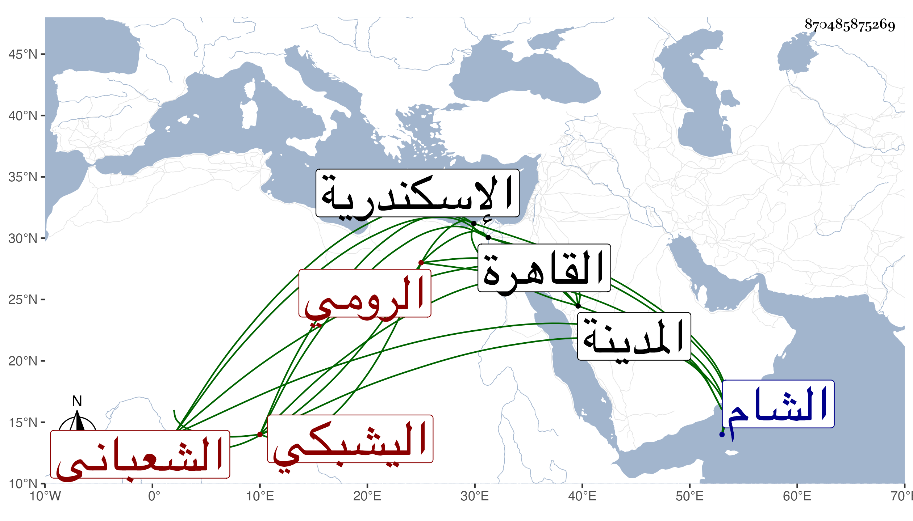

0902Sakhawi.DawLamic.ITO20230111-ara1.EIS1600.870485875269
Biography ID: 870485875269
677
خشقدم الرومي اليشبكي يشبك الشعباني الاتابكي . أصله لنائب الشام تغرى بردى البشبغاوي الظاهري فقدمه للظاهر برقوق فأنعم به على مملوكه فارس حاجب الحجاب واشتراه يشبك من تركته فلما قتل عاد له فلما مات صار جمدارا عند المؤيد ثم ناب بعده في تقدمة المماليك ثم نقله الاشرف إلى التقدمة نفسها في سنة ثلاث وثلاثين ثم قبض عليه الظاهر وسجنه باسكندرية لممالأته مع العزيز ثم أطلقه ورسم له بالاقامة بالمدينة النبوية ثم أذن له بالرجوع إلى القاهرة حتى مات في شوال سنة ست وخمسين وقد ناف على السبعين وهو صاحب الدار التي بقنطرة طقز دمر والتربة التي دفن فيها بالصحراء بالقرب من تربة أستاذه يشبك ، وكان جسيما طوالا جميلا مترفعا مع نقصه فيما قيل .
